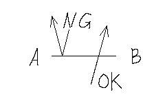
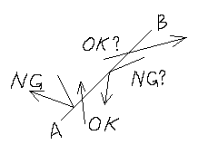

Math.atan2(y, x)で交差する4点から角度を求める
アクションゲームですり抜ける足場(以下、プラットフォーム)を作ろうとした時、
dyを条件にしていたら不都合が生じた。
左は下方向なので遮断される。
右は上方向なので通過できる。
具体的には、地面が平坦でない場合。
角度がついた坂のプラットフォームでは、dxとともにdyも変化するために、判定をすり抜けてしまった。
下調べ
シューティングゲーム的に2点から求めるものは多々見かけた。
これでは実現できない。
アクションゲームは点ではなく線なのだ。
地形の線分から自機の座標とdx, dyを元に、上下を判定したい。
arctanの理解
まずこれがわかりにくい。
具体例で学ぶ数学 | atan関数とatan2関数の意味と違いargumentで比較すればすぐにわかる。
これがすべて。実に端的に表せている。
Math.atan2() は、x と y が別々に渡され、x と y の符号によって象限を決定します。Math.atan() は、それらの 2 つの引数の比率 y/x が渡され、-PI/2 から PI/2 までの数値を返します。
とりあえず動かしてみよう
atan(y / x) =0.00
atan / PI =0.00
cos(atan) =0.00
sin(atan) =0.00
x =0, y =0
atan2(y, x) =0.00
atan2 / PI =0.00
cos(atan2) =0.00
sin(atan2) =0.00
鉛直下向きに+なところだけ注意。
atan()は分数に直すから符号が打ち消される。
| sign | -x | +x |
| -y | + | - |
| +y | - | + |
当たり前といえば当たり前。
手順
1. 交差しているかの判定
selector =
crossFlag =
点が重なると優先度の関係で持ってる点が移るけどしったこっちゃねえ。
内積はわかってるでしょって感じだけど、ここがとても丁寧に解説してくれている。
Flashゲーム講座 & アクションスクリプトサンプル集 | レイと線分とで当たり判定を取る2. 原点からの線分に直して、-PI, PIを考慮して角度を出す
atan2(aby, abx) =
atan2(cdy, cdx) =
cdD - abD =
fixDegree =
degree / PI =
線分cdの角度から線分abをの角度を引けば、
線分abと線分cdの相対的な角度が求まる。
-PIを超えるときは+2PI
PIを超えるときは-2PIの補正をかける。
これをプラットフォームの判定に持ち込む。
尻切れトンボになるけど早く作りたいからこれで終わり。
あとがき
手順2の2つめのcanvasは動かせるようにしたいなあ。いや、だるい。
出回っている情報が少ないというより、
こんな瑣末なことに引っかかっているようじゃ、
アクションゲーム作りなんて遠い夢なんだろうか。
あるいは、その辺に転がっているお手軽なライブラリを使っているか。
弘法だって筆は選びたいじゃん。